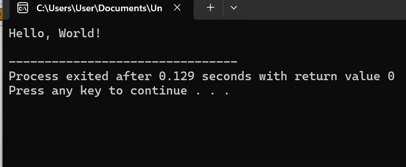
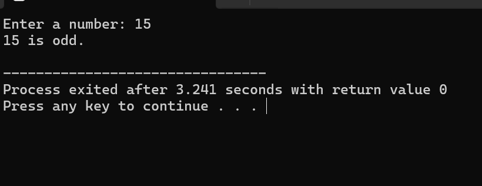
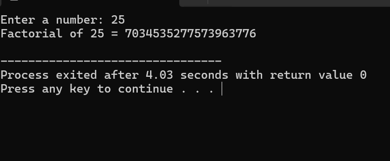

Simple C Code and Output
C Code: Hello World
#include <stdio.h>
int main() {
printf("Hello, World!\\n");
return 0;
}
Output Image: Hello World

C Code: Even or Odd Check
#include <stdio.h>
int main() {
int num;
printf("Enter a number: ");
scanf("%d", &num);
if (num % 2 == 0) {
printf("%d is even.\\n", num);
} else {
printf("%d is odd.\\n", num);
}
return 0;
}
Output Image: Even or Odd

C Code: Factorial Calculation
#include <stdio.h>
int main() {
int num, i;
long long fact = 1;
printf("Enter a number: ");
scanf("%d", &num);
for(i = 1; i <= num; i++) {
fact *= i;
}
printf("Factorial of %d = %lld\\n", num, fact);
return 0;
}
Output Image: Factorial Calculation
